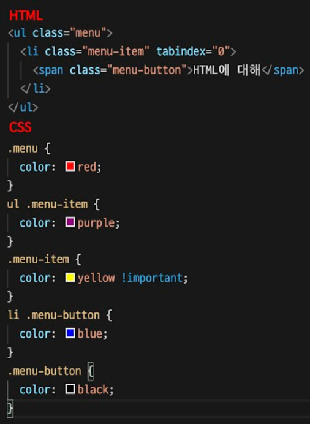

Day-1
- label의 for 속성을 이용하면 input과 연결할 수 있는데, input의 어떤 속성과 연결해야 하는지 고르시오.
- id
- name
- title
- placeholder
- margin 속성의 특징을 작성하시오.
- margin-top, margin-bottom의 경우 중첩이 일어남.
- 음수 마진이 가능함.
- flex의 속성 중 주축을 기준으로 정렬하는 방법을 고르시오.
- justify-conent
- align-items
- flex-direction
- align-self
- 다음중 html의 전역 속성이 아닌 것을 모두 고르시오.
- title
- id
- lang
- value
- border-box에 대한 설명으로 맞는 것을 고르시오.
- box-sizing의 기본 값이다.
- 원하는 박스 사이즈를 얻기 위해서는 padding과 border를 고려해야 한다.
- padding과 border가 상자안에 위치해 박스의 크기에 영향을 주지 않는다.
- width, height 속성이 콘텐츠 영역만 포함해 안팎 여백과 테두리가 박스 크기에 영향을 미친다.
Day-2
다음 코드에서 이미지 아래에 약 2px 정도의 baseline이 남아 배경색이 표시되는 문제가 있다. 이와 같은 문제를 해결하기 위해 두 가지 방법을 사용하였다 각 방법에 맞는 코드를 입력하시오.
- display: block;
- vertical-align: top;
- vertical-align: middle;
- vertical-align: bottom;
- vertical-align: baseline;
HTML5에서는 정보 구조를 명확히 할 수 있도록 ‘아웃라인 알고리즘’이라는 개념이 도입되어 기존에 암묵적으로 그리던 아웃라인을 명시적이고 의미론적으로 작성할 수 있게 되었다. 다음 중 HTML5에서 새롭게 도입된 태그가 아닌 것을 고르시오.
1
2
3
4<section>
<aside>
<div>
<article>focus란 선택이 되거나 마우스 이벤트 등을 받은 상태를 의미하며, HTML의 태그들 중에는 특별한 속성을 부여하지 않아도 focus를 받을 수 있는 태그들이 존재한다. 이 중 focus를 기본 속성으로 갖는 태그를 모두 고르시오.
1
2
3
4
5<a>
<button>
<div>
<input>
<span>다음 코드중에서 calc 함수를 잘못 사용한 것을 모두 고르시오.
- calc(100% - 15px)
- calc(20%+15px)
- calc(100%/5)
- calc(15%*4)
- HTML5.2에서 정의형 목록(dl)의 자식요소로 올 수 있는 요소가 아닌 것을 고르시오.
1
2
3
4<div>
<dt>
<dd>
<a>
Day-3
다음의 코드는 span 태그를 button처럼 사용하고자 class와 role 두가지 방법으로 코드를 만들었다. 각 코드의 차이를 간단하게 서술하시오.
“class는 단순히 버튼의 모양만을 위해서 사용하여 버튼의 기능을 하지 못합니다.”
- 아래 코드는 li 태그안에서 span 태그로 세미콜론(:)을 삽입하는 코드를 작성하였다. 이 때 span 태그에 aria-hidden=”true”을 사용한 이유를 작성하시오.
“ : 은 꾸미기만을 위해서 사용한 것으로 스크린리더가 읽을 수 없도록 하기 위해서 사용하였습니다.”
- white-space는 공백문자를 처리하는 속성이다. 크기가 정해진 박스 안에 있는 텍스트가 개행되지 않도록 하기 위해 사용하는 white-space 속성의 값을 고르시오.
- normal
- pre
- nowrap
- pre-wrap
- break-spaces
- 날짜나 시간을 나타내기 위한 목적으로 사용되는 태그를 이용하여 2020년 7월23일 오후 7시 30분을 작성하시오.
- 다음의 코드는 메인이라는 내용을 담고 있는 h2태그를 보이지 않게 만드는 코드이다. 내용이 있는 코드임에도 보이지 않게 만드는 이유는 무엇인지 설명하시오.
- 스크린리더 사용자에게 메인이라는 것을 알 수 있도록 h2를 작성하였으나 디자인상으로 노출되면 안되기 때문에 숨기기 위해서 사용합니다.
Day-4
1 | <div class="container"> |
1-1. 위 코드에서 group클래스를 가진 세 개의 div에 float를 적용했다. 이 때 clearfix를 적용해야 하는 부분을 찾아 고드를 작성하고, css에서 clearfix를 어떻게 적용하는지 작성하시오.
1 | <main class="main clearfix"> |
1-2 위 코드에서 clearfix를 적용해야 하는 이유를 작성하시오.
- group에 float을 적용하게 되면 부모인 main이 자식요소인 group을 알 수 없게 되어 높이를 잃어버리고, 뒤쪽에 오는 다른 요소들에게도 float이 영향을 끼치게 되기 때문에 clearfix를 사용하여 float을 해제하고 부모가 자식의 높이를 인지할 수 있도록 해줘야 한다.
- 아래 HTML에서 h2에 padding을 넣었을 때와 a에 padding을 넣었을 때의 차이를 작성하시오.
1
<h2><a href="#" lcass="tab">공지사항</a></h2>
- h2에 패딩을 넣었을 때는 단순히 외형적인 변화만 있을 뿐이고, a에 패딩을 넣었을 때는 실제로 클릭할 수 있는 영역이 확장되게 된다.
아래 코드를 보고 .menu-button에 적용될 색상을 고르시오.
- red
- purple
- yellow
- blue
- black
- position은 태그의 위치를 결정한다. position: abolsute의 기준을 말하고, 기준이 없다면 어떻게 되는지 설명하시오.
-position:absolute는 내 부모가 가지고 있는 position의 값이 static인지를 확인하고 static이 아닌 경우에 기준으로 인정한다. 다만, 부모요소의 position값이 static이게 되면 계속 부모요소를 타고 올라가서 브라우저의 화면 끝까지 올라가게 된다. 또한 top, right, bottom, left 값을 지정해주지 않는다면 원래 있어야할 (normal flow에 따른) 위치에 있게 된다.
Day-5
- “패스트캔퍼스”라는 글씨를 누르면 패스트캠퍼스 홈페이지(www.fastcampus.com)를 새로운 창으로 연결하는 코드를 작성하시오.
-<a href=”www.fastcampus.com"target="_blank">패스트캠퍼스
- transiton은 transiton-property, transiton-duration, transiton-timing-function, transiton-delay를 위한 단축속성이다. 위 4가지 속성에서 transition이 동작하기 위한 필수속성이 제대로 연결된 것을 선택하시오.
- transition-property, transition-delay
- transition-duration, transition-delay
- transition-property, transition-duration
- transition-property, transition-timing-function
- :hover를 사용할 수 있는 속성을 모두 선택하시오.
- a
- div
- input
- span
- css에서 백그라운드 이미지를 사용하는 패턴중에 css sprite패턴을 사용하는 이유를 작성하시오.
- 서버에서 여러장의 이미지를 요청하고 받는것보다 한 장의 이미지를 요청하고 받아오는 것이 성능면에서 더 효율적이기 때문에.
- ul의 agent style을 초기화하는 css code를 작성하시오.
1
2
3
4
5
6ul{
margin-top: 0;
margin-bottom: 0;
padding-left: 0;
list-style: none;
}
Day-6
- 아래 개별속성을 단축속성으로 작성하시오.
1
2
3
4.grid-container{
grid-template-rows: repeat(3, 100px);
grid-template-columns: repeat(2, 20px 40px);
}1
2
3.grid-container{
grid-template: repeat(3, 100px) / repeat(2, 20px 40px);
}
- 사이즈를 설정하는 단위중에서 em과 rem의 차이점을 설명하시오.
- em은 부모로부터 상속받은 font-size를 기준으로하여 1em은 부모의 폰트사이즈와 같고, rem은 최상위 html에 설정된 font-size를 기준으로 하여 1rem은 html에 설정된 폰트사이즈와 같다.
- 다음 HTML코드의 li 중에서 홀수번째 li를 선택하여 텍스트 컬러를 gray로 바꾸는 코드를 작성하시오.
1
2
3li:nth-child(odd) a{
color: gray;
}
- 다음 중 자식 요소에 상속되는 속성을 모두 선택하시오.
- color
- border-radius
- font-size
- padding
<fieldset>의 콘텐츠를 설명하는 요소로 맞는 것은?<legend><h1 ~ h6><form><p>
Day-7
- 아래의 viewport 코드를 설명하시오.
1
<meta name="viewport" content= width=divice-width, initial-scale=1.0, user-scable=no, minimum-scale=1.0, maximum-scale=3.0">
- content : 브라우저 너비를 장치 너비로 설정
- initial-scale : 초기 화면 배율 설정
- user-scalable : 브라우저의 축소/확대 여부를 설정
- minimum-scale : 화면의 축소 가능한 최소 비율을 설정
- maximum-scale : 화몀ㄴ의 확대 가능한 최대 비율을 설정
- 반응형으로 작업을 할 때 이미지를 max-width: 100%; 설정하는 이유를 작성하시오.
- 이미지가 원본사이즈 이상으로 커지지 않게 하기 위해서 (원본 사이즈 이상으로 이미지가 커지게 되면 이미지의 선명도에 문제가 생긴다.)
- 다음 단위 중에서 상대 단위가 아닌 것을 고르시오.
- px
- vh, vw
- pt
- %
- rem, em
- 다음 코드가 동작하는 환경이 마즌ㄴ 것을 고르시오.
1
<link rel="stylesheet" href="./css/small.css" media="screen and (min-width:320px) and (max-width:999px)">
- 최대 크기가 300px 이상일 경우 동작한다.
- 최대 크기가 300px 이하일 경우 동작한다.
- 모든 미디어 유형에서 동작한다.
- 스크린 유형에서 동작한다.
- picture 태그를 사용할 때는 반드시 하나 이상의 ()가 포함되어야 한다. ()에 들어갈 태그를 작성하시오.
<img>
Day-8
- 다음 box모델 중에서 text-indent를 사용할 수 없는 모델은?
- block
- inline-block
- inline
- table-cell
- 아래 코드는 12column 시스템을 이용하기 위한 코드이다. 코드 중 빨간 상자에 들어갈 column사이의 gutter를 설정하는 속성을 작성하시오.

- grid-gap
- 명시적인 아웃라인과 암묵적인 아웃라인의 차이점에 대해서 설명하시오.
- 명시적인 아웃라인은 section, article 등의 요소로 직접 묶어서 아웃라인을 설정하는 것을 말하고, 암묵적인 아웃라인은 heading 태그를 사용하여 그 아래에 있는 요소들이 아웃라인을 구성하도록 하는 것을 말한다.
- 다음 중 CSS3의 웹폰트를 사용하기 위한 선언을 고르시오.
- @font-face
- @font-family
- @font-style
- @font-variant
- display: flex인 경우 flex-item의 증가 너비 비율을 설정하는 속성을 고르시오.
- order
- flex-grow
- flex-shrink
- flex-basis